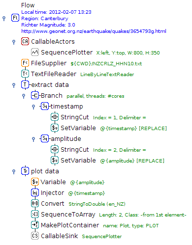

The core of ADAMS is the workflow engine, which follows the philosophy of less is more. Instead of letting the user place operators (or actors in ADAMS terms) on a canvas and then manually connect inputs and outputs, ADAMS uses a tree-like structure. This structure and the control actors define how the data is flowing in the workflow, no explicit connections necessary. The tree-like structure stems from the internal object representation and the nesting of sub-actors within actor-handlers.

Here is an overview of some of the functionality available in ADAMS:
| Feature | Available |
|---|---|
| Machine learning/data mining | WEKA, WEKA webservice, MOA, MEKA, parameter optimization, experiment generation on-the-fly, setup generators, time series |
| Data processing | WEKA, R-Project, XML, XSLT, XPath, HTML, JSON |
| Streaming | MOA, Twitter (record/replay) |
| Spreadsheets | MS Excel (r/w), ODF (r/w), CSV (r/w), Gnumeric (r/w) |
| Databases | MS Access, MySQL, SQLite, JDBC |
| Imaging | ImageJ, JAI, BoofCV, ImageMagick, Gnuplot, LIRE, OCR (tesseract), Barcodes (Zxing) |
| Graphics output | BMP, JPG, PNG, TIF, PDF, RAW (dcraw, ufraw) |
| Visualization | Scatter and line plots, Control charts, Images, GIS (OpenStreetMap) |
| Scripting | Groovy, Jython |
| Documentation | DocBook, HTML |
| Web | HTTP, FTP, SFTP, SSH, Email, Webservices |
| Other | de/-compression (tar, zip, bzip2, gzip, lzma), Java code generation |